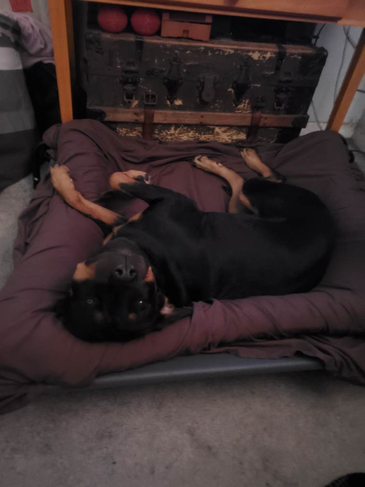
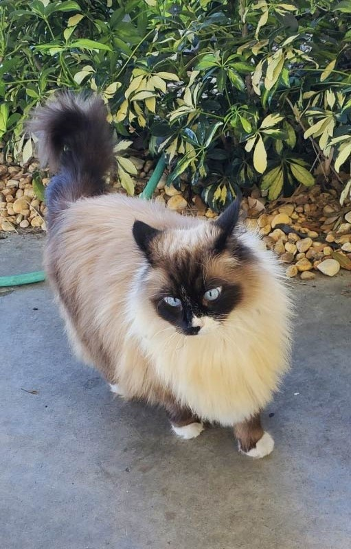

These are just a few of our most photogenic babies we've had the honor of sharing our love with:

Maya is a goofy, silly, hyper little ball of fun who loves to love and loves to eat! she's sure to bring your house plenty of love
Noble is a shy but loving kitty, quiet and stays hidden at first but the better she gets to know you the more open (and loud) she gets! truly a soft bundle of joy happy to fill your home with warmth
Now bear is a mischevious little fellow who truly just loves attention. very patient and weet and more than anything wants to cuddle and be around someone he can truly feel safe around, but don't worry! he's sure to make sure you feel safe and sound too

Euphy is a prideful little fellow always concerend about her beauty and her comfort, perfect cat for those who aren't around as much or whom aren't able to dedicate the time other needy pets require, she's sure to be there and happy to see you every day you get home from work though
{kind=link}
{kind=link}
{kind=link}
{kind=link}